[1] 0Dormann (2020), Environmental Data Analysis — Chapter 3 (3.3, 3.5) and Chapter 4 (4.2–4.4)
2026-09-03
Last time we chose parameter values and looked at the resulting curve. Now we turn the question around: given data, which parameter values fit best?
At the end of this chapter you should…
fitdistr() and read its outputNote
Illustrations use nlschools, immer and geyser from the MASS package — which also provides fitdistr().
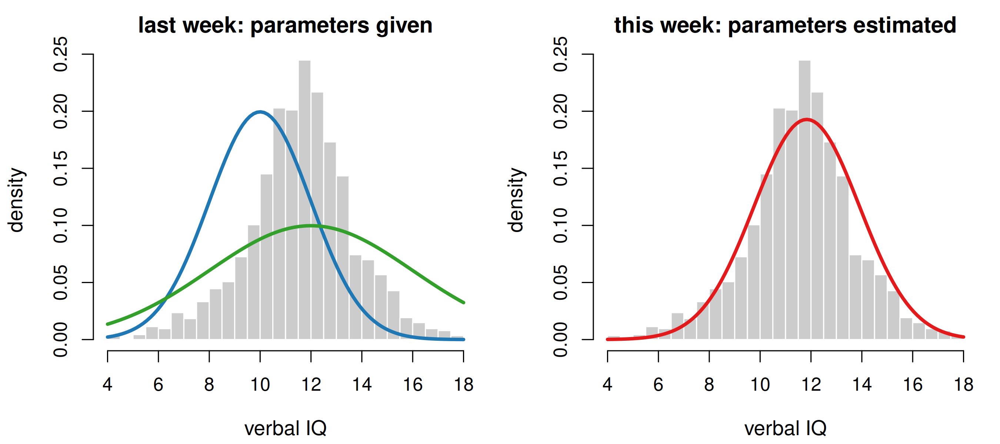
Left: two normal curves we simply picked; neither is convincing. Right: the one normal curve that makes these 2287 pupils as likely as possible. Finding it is called fitting a distribution to the data, and it needs two ingredients: a measure of fit, and a way to maximise it.
An estimator is a rule for calculating a quantity from data. An estimate is the number that rule produces for one particular sample.
the sample mean \(\bar{x}\) is an estimator; 40.93 is the estimate
Two things we want from an estimator:
Important
Careful with symbols: \(\bar{x}\) and s describe a sample (any sample, any distribution). \(\mu\) and \(\sigma\) are parameters of a normal distribution. Writing \(\mu\) already commits you to normality.
The density function answers: given the parameters, how probable are these data?
The likelihood answers the mirror question: given these data, how plausible are those parameters?
The two are numerically the same quantity — only the reading direction differs. The d...() functions therefore do double duty: dnorm(), dbinom(), dpois() are our likelihood machines.
Tip
Crucially: in a distribution plot the data vary along the x-axis and the parameters are fixed. In a likelihood plot the data are fixed and the parameter varies along the x-axis.
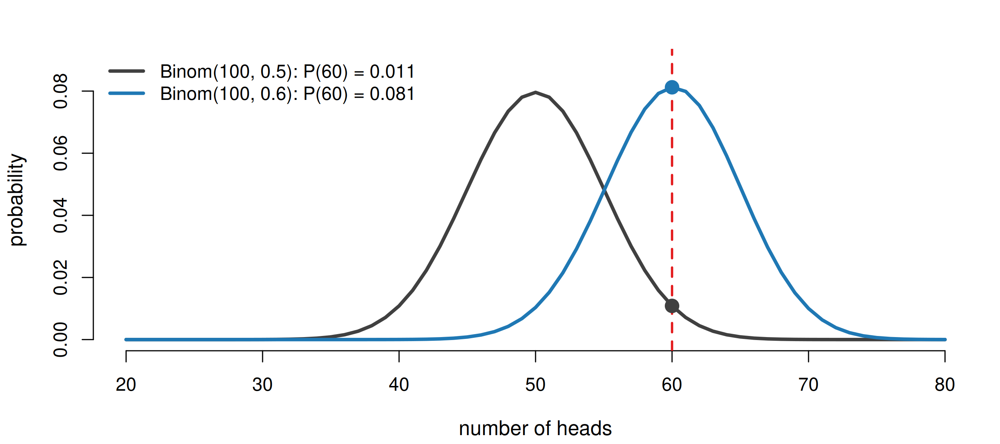
Two candidate values of p, and the one observation we actually made (dashed line). Under p = 0.6 our result is about eight times more probable than under p = 0.5 — so p = 0.6 is the more plausible parameter.
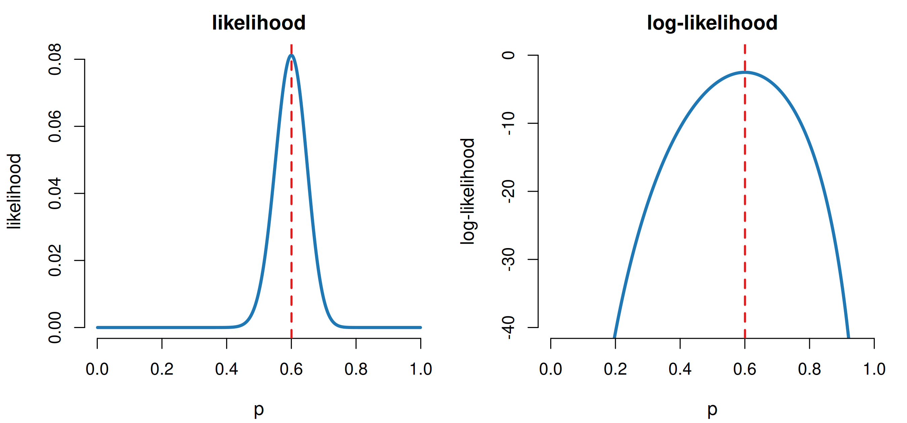
Same dbinom() call, completely different picture: now p runs along the x-axis. The peak sits at 0.6 — the maximum likelihood estimate, and exactly what the analytical formula \(\hat{p} = \bar{x}/n\) gives. Taking the logarithm squashes the y-axis but cannot move the maximum, because the logarithm is strictly increasing.
The data points are assumed independent, so the probability of observing all of them is the product of their individual densities.
That product is the likelihood of the data set. And it is a disaster numerically: multiply 2287 numbers smaller than 1 and you get…
Zero. Not because the data are impossible, but because the computer ran out of decimal places. Hence the old trick: take the logarithm, and the product becomes a sum.
[1] -8270.599[1] -8270.599'log Lik.' -8270.599 (df=2)log = TRUE is not just shorter: it computes the logarithm inside the density function, so no tiny intermediate number ever has to be stored. logLik() also reports df = 2, the number of estimated parameters — remember that, we need it for AIC.
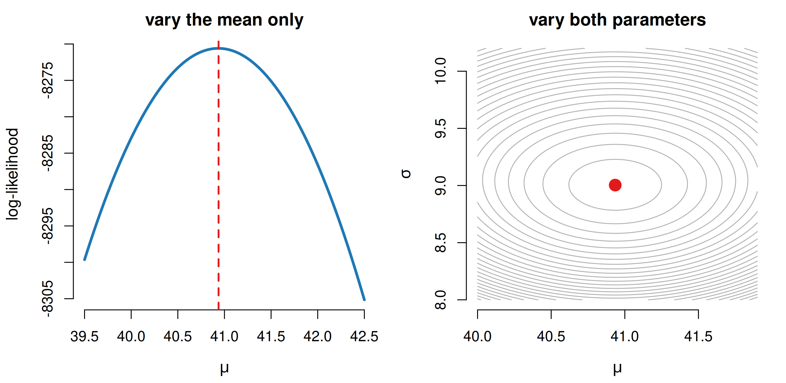
nlschools$lang, n = 2287. Left: a smooth hill with one clear top. Right: with two parameters the likelihood is a surface, and the maximum likelihood estimate is its summit (red). Fitting a distribution is climbing this hill.
For a few distributions the top of the hill can be found with pen and paper:
| distribution | maximum likelihood estimator |
|---|---|
| normal | \(\hat{\mu}\) = the sample mean, \(\hat{\sigma}\) = the sample sd |
| Poisson | \(\hat{\lambda}\) = the sample mean |
| binomial (n known) | \(\hat{p}\) = mean number of successes / n |
mean sd
40.934849 9.003676 mean sd
40.934849 9.001707 So the familiar sample statistics from Chapter 1 are not arbitrary — for the normal distribution they are the maximum likelihood estimators. (The tiny difference in the sd is the n versus n − 1 divisor.)
For most distributions (the negative binomial, for instance) no closed expression exists, so R searches for the summit numerically — trial and error, guided by a fast optimisation algorithm. That is all fitdistr() does.
Why maximum likelihood is the default method:
The main alternative is the method of moments (match sample mean, variance, … to the distribution’s). Easier to compute, usually less efficient.
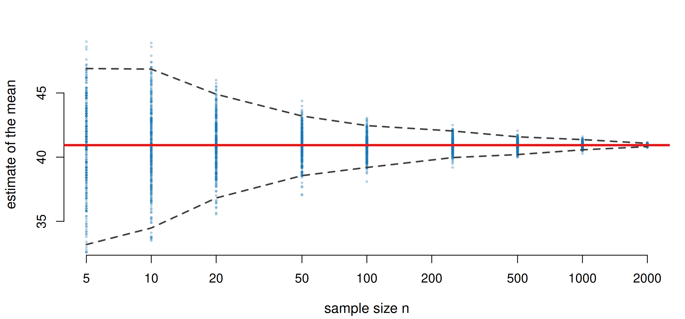
300 samples of each size drawn from the 2287 pupils; the red line is the truth. The cloud is centred on it at every n (unbiased) and narrows as n grows (consistent). With n = 5 an estimate can easily be 6 points off.
fitdistr(): the estimates come with error bars mean sd
101.090000 27.304564
( 3.525004) ( 2.492554) mean sd
40.9348491 9.0017074
( 0.1882313) ( 0.1330996)The second line of each block is the standard error of the estimate. The barley mean is known to about ±3.5, the pupils’ mean to about ±0.19: with 38 times more data the estimate is roughly 6 times more precise (√38 ≈ 6). Always report the estimate with its uncertainty.
Often the process tells you: counts of independent events → Poisson; k successes out of n → binomial; many small additive contributions → normal.
It is the awkward cases that need judgement:
Warning
The reflex use of the normal distribution is the commonest mistake. When there is no clear candidate, fit several and let the data choose — that is what the rest of this talk is about.
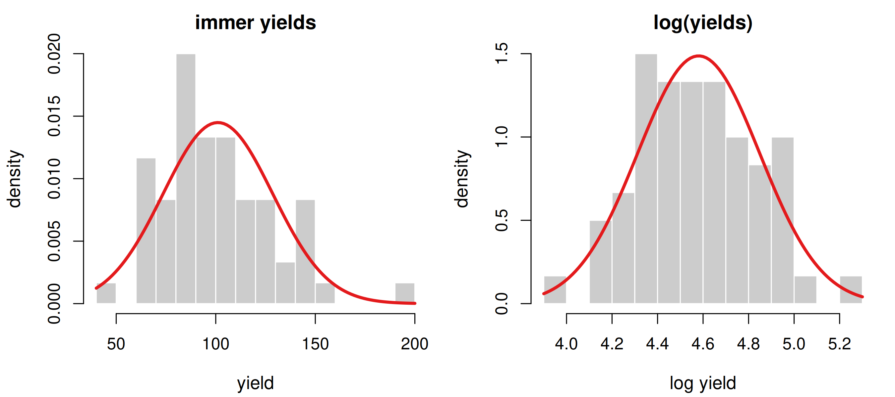
Taking logs turns a log-normal problem into a normal one — but it also changes the variance, and the result must satisfy the assumptions of the new distribution. The square root of Poisson data often looks normal for exactly this reason (it stabilises the variance). Useful, but never automatic.
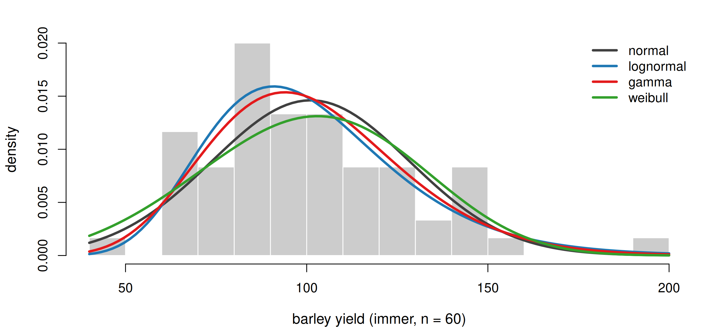
Four distributions fitted by maximum likelihood to the same data. The one with the highest log-likelihood made these 60 yields most probable — so higher is better. But is that enough?
A distribution with more parameters is more flexible and will always be able to reach a higher log-likelihood. Comparing \(\ell\) alone therefore rewards complexity for its own sake.
| criterion | penalty per parameter | note |
|---|---|---|
| log-likelihood \(\ell\) | none | higher is better |
| AIC | 2 | lower is better |
| AICc | slightly more than 2 | AIC corrected for small n; use it by default |
| BIC | log(n) | penalises harder as the sample grows |
All three start from the same \(\ell\) and subtract a price for each parameter you were allowed to tune. With n = 60 the BIC penalty is log(60) ≈ 4.1 per parameter — twice as strict as AIC.
| logLik | AIC | BIC | |
|---|---|---|---|
| lognormal | -280.5 | 565.1 | 569.3 |
| gamma | -280.9 | 565.8 | 570.0 |
| normal | -283.6 | 571.1 | 575.3 |
| weibull | -284.9 | 573.8 | 578.0 |
immer yields, n = 60. The log-normal wins, the gamma is a close second, and the normal and Weibull trail. Here all four candidates have two parameters, so AIC and BIC merely reorder what \(\ell\) already said — the three criteria agree. They need not always.
| logLik | AIC | BIC | |
|---|---|---|---|
| normal (2 par.) | -8270.6 | 16545.2 | 16556.7 |
| Poisson (1 par.) | -8734.0 | 17470.1 | 17475.8 |
nlschools$lang are whole numbers, so a Poisson is conceivable — but for a Poisson the variance must equal the mean, and here the mean is 40.9 while the variance is only 81… far from a match once you also demand the right shape. The normal wins on every criterion, and comfortably enough that the one saved parameter cannot rescue the Poisson. Exactly Dormann’s ash-tree comparison (Table 3.1).
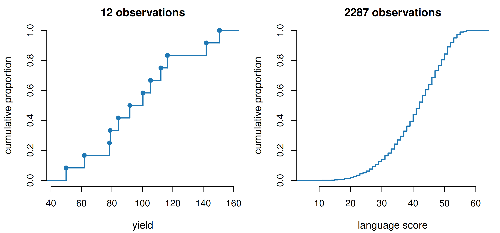
Sort the values and step up by 1/n at each one: that is the empirical cumulative distribution function. No bin width to choose, no smoothing — every data point is in there. With few data it is a coarse staircase; with many it becomes a smooth curve that we can lay a theoretical cdf on top of.
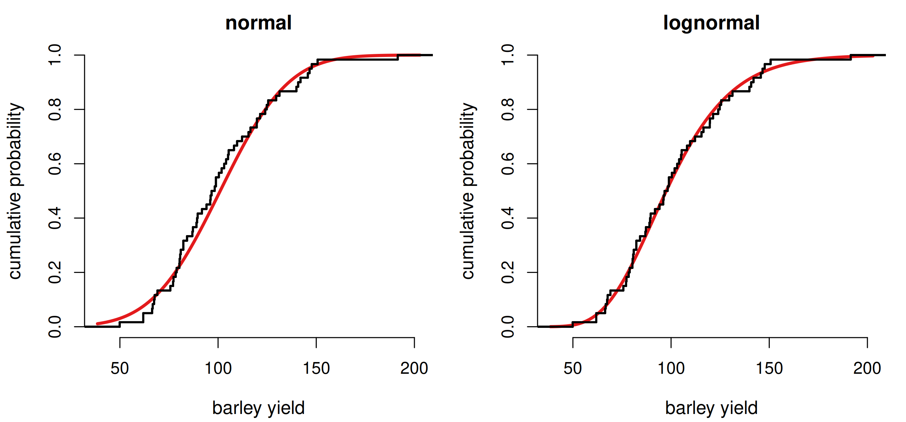
Black: the data. Red: the fitted cumulative distribution. The normal curve rises too early in the left half and lags in the right tail; the log-normal tracks the staircase more closely. This graphical comparison is often more revealing than any test statistic.
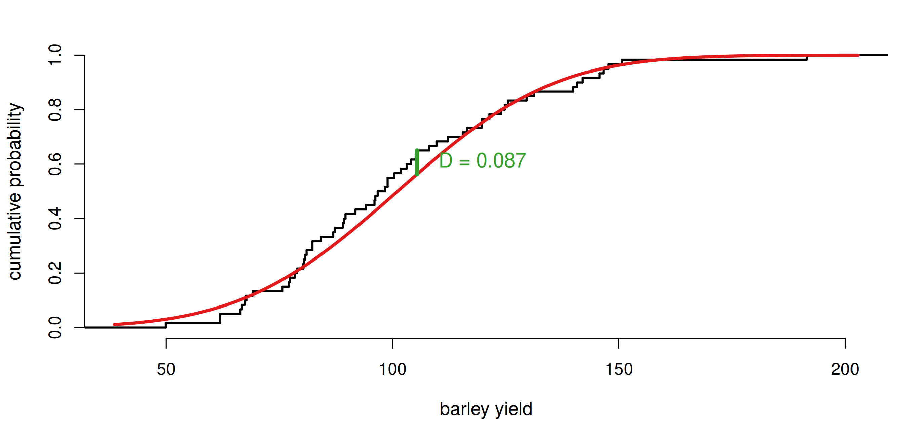
D is simply the largest vertical distance between the two curves. Bigger D = worse agreement. The test converts D into a p-value; the null hypothesis is “the data come from this distribution”, so a small p-value means the fit is rejected.
| D | p | |
|---|---|---|
| lognormal | 0.055 | 0.993 |
| gamma | 0.063 | 0.973 |
| normal | 0.087 | 0.751 |
| weibull | 0.096 | 0.635 |
The ranking by D agrees with the ranking by AIC here — reassuring, but the two measure different things: AIC is about the density at the data points, D about the worst mismatch in the cumulative curve. None of the p-values is small, so no candidate is formally rejected: with n = 60 the test simply has little power.
1. Ties. The test assumes a continuous variable, where no value occurs twice. Repeated values (“ties”) have no exact solution, and R warns you.
2. Estimated parameters. We fitted the reference distribution to the very data we then test against it. The curve has been pulled towards the data, so D is too small and the p-value too optimistic — the fit looks better than it is.
The Lilliefors test (package nortest) is the KS-test corrected for exactly this. The Anderson-Darling test is another alternative, and is less sensitive to outliers.
| n | W.W | p | |
|---|---|---|---|
| nlschools\(lang | 2290| 0.970| 0.00| |nlschools\)IQ | 2290 | 0.986 | 0.00 |
| immer yields | 60 | 0.961 | 0.05 |
| geyser$waiting | 299 | 0.939 | 0.00 |
The Shapiro-Wilk test is a dedicated normality test with a good reputation. W near 1 means “close to normal”. Note the trap already: nlschools$lang looks perfectly bell-shaped to the eye, yet is rejected with a p-value of 10⁻²¹ — and geyser$waiting, which is blatantly bimodal, is rejected no more decisively.
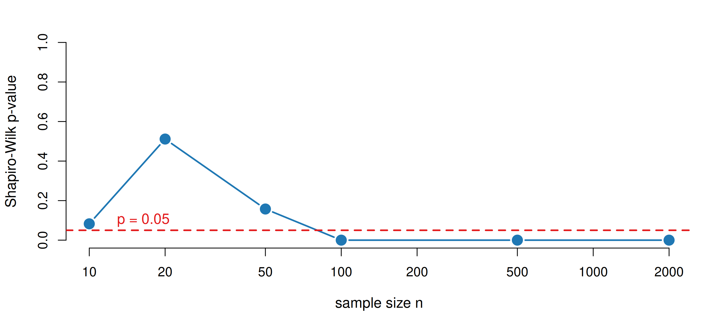
The same clearly non-normal (log-normal) data throughout. With n = 10 the test cannot tell the difference; by n = 500 it is certain. So a non-significant result on a small sample proves nothing, and on a large sample every real data set is rejected, because no real data set is exactly normal. The question is never “is it normal?” but “is it normal enough?”
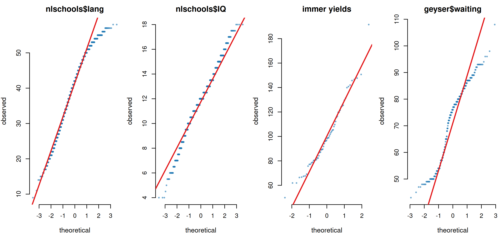
A p-value gives one number; the QQ-plot gives a diagnosis. Left tail bending below the line = left skew (lang); a staircase = discreteness (IQ); an S-shape = heavy tails; the double bend of geyser$waiting betrays bimodality. This is the graphical evaluation Dormann recommends over any test.
Melanoma survival times; compute the likelihood, log-likelihood, AIC and BIC by hand and check against Rquine$Days: Poisson versus negative binomial, with expected frequenciesTip
Everything you need is fitdistr(), logLik(), AIC(), BIC(), ecdf(), ks.test(), shapiro.test() and qqnorm().
d...() call, the other way round.fitdistr().Tip
Dormann, C. F. (2020). Environmental Data Analysis: An Introduction with Examples in R, Chapters 3 and 4. Springer.